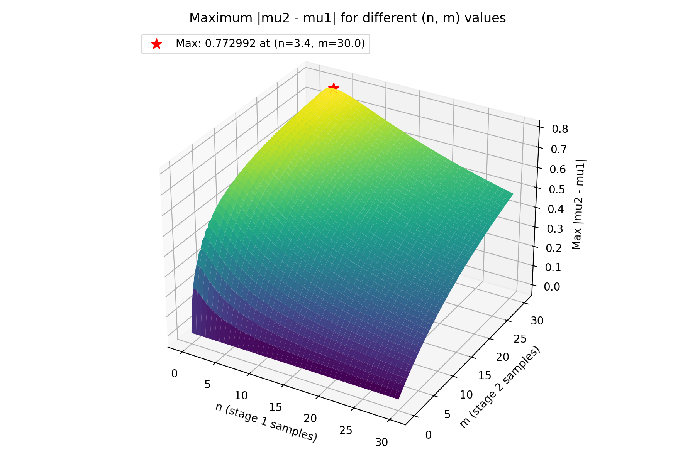

Surprisal Normalization
Surprisal values can be normalized by the maximum possible mean shift over all hypothetical nodes, given:
- \(N\): maximum number of samples (belief draws) taken at each stage
- \(w\): evidence weight applied to the stage-2 samples
- \((\alpha, \beta)\): Beta prior hyperparameters (e.g., Jeffreys prior is \((0.5, 0.5)\))
Definitions
We model two stages of evidence under a Beta prior. In the hypothesis stage, beliefs about a hypothesis are elicited from the LLM without experimental evidence. In the evidence stage, beliefs about a hypothesis are elicited from the LLM with experimental evidence.
Let:
Hypothesis stage:
- \(n\): number of non-abstained samples in \([0, N]\)
- \(x\): true-mass in \([0, n]\)
Evidence stage:
- \(m\): number of non-abstained samples in \([0, N]\)
- \(y\): true-mass in \([0, m]\)
- \(t = w m\): effective evidence mass
The mean belief after each stage is:
For normalization, we need the maximum possible absolute shift:
over all allowed \(n, m, x, y\) for fixed \(N\) and \(w\).
Closed-form optimization
For fixed \((n, x)\) and with \(y\) chosen at an extreme (the maximizing case), the absolute shift $$ \left|\frac{\alpha + x + w m}{S + n + w m} - \frac{\alpha + x}{S + n}\right| $$ is monotone increasing in \(m\) when \(w > 0\). Therefore the maximum over \(m \in [0, N]\) occurs at \(m = N\), i.e., at maximal evidence mass.
Setting \(m = N\):
The only remaining degree of freedom is \(n\). Define:
Let the more vulnerable side of the prior be:
After simplifying the absolute shift at the extremes, the objective becomes:
Unconstrained optimizer
Differentiate and set to zero:
Carrying out the quotient-rule derivative and simplifying yields:
Setting the numerator to zero gives the quadratic:
Since \(n \in [0, N]\), we clamp to the feasible interval \(u \in [S, S + N]\):
Because \(f(u)\) is unimodal on \(u > 0\), the projection onto the interval preserves the constrained maximizer.
Finally, the global theoretical maximum is:
Illustration
The plot below is generated by a grid search over \(n, m \in [0, N]\) with step size \(0.1\).

Remarks: Fixed \((n, m)\) Slices
For a fixed \((n, m)\), the mean is linear in \(x\) and \(y\), so the maximum absolute shift occurs at the extremes:
- Stage 1: \(x \in \{0, n\}\)
- Stage 2: \(y \in \{0, m\}\)
A grid search only needs to compare two cases at each \((n, m)\):
- Hypothesis stage all false (\(x = 0\)), evidence stage all true (\(y = m\))
- Hypothesis stage all true (\(x = n\)), evidence stage all false (\(y = 0\))
However, the values of \((n, m)\) are not fixed if the LLM abstains from responding, which reduces the number of samples.